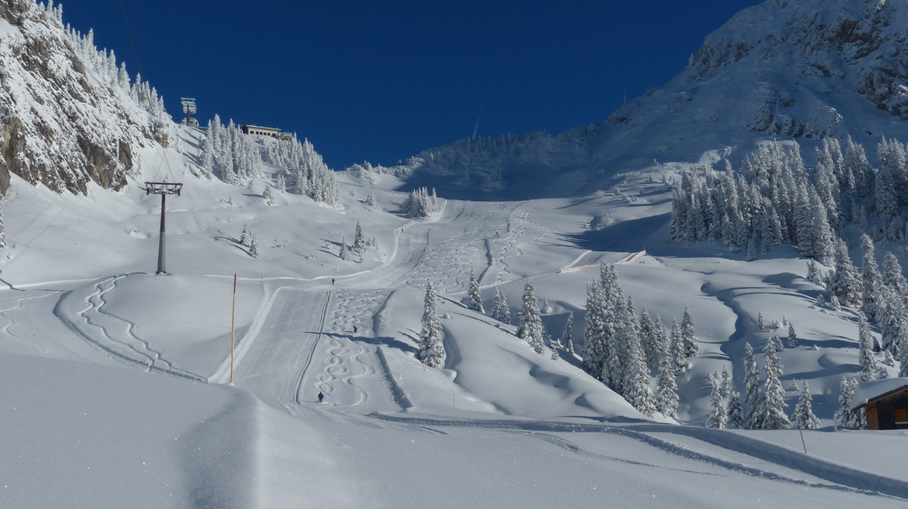

Sports & Entertainment
Meet Some of the Canadian Athletes Competing at the 2022 Winter Olympics
By Holly Li | Published Feb 2, 2022 9:16 p.m. PST

Winter Olympics Games are held every four years, two years after the Summer Olympic Games. However, due to the delay of the 2021 Tokyo Summer Olympics, the gap between the summer and winter games is only half a year. The 2022 Winter Olympics will take place from January 4 to January 20 in Beijing, China.
Where is it taking place?
As the only city that hosts both the Summer and Winter Olympics, Beijing decided to reuse the 2008 Summer Olympics venue. All winter games happen in three zones, Beijing, Yanqing, and Zhangjiakou. The Opening and Closing Ceremony will take place at The National Stadium, also called The Bird's Nest due to its unique design. The only new venue is the National Speed Skating Oval, where the speed skating competition is hosted. The National Speed Skating Oval has the shape of an Ice Ribbon, which represents the elegance and dynamic of speed skating. This venue is built on Beijing’s Olympic Green, where a hockey game was hosted in the 2008 Summer Olympics.
What are the challenges?
The spread of COVID-19 will be a major challenge in the 2022 Winter Olympics. By January 24, 2022, there had been three positive COVID-19 cases confirmed among the players. Russian figure skater Mikhail Kolyada, a three-time national champion, will not enter the game due to a COVID-19 infection.
Strict COVID-19 protocols have been put in place to ensure the safety of the athletes. Participants who test positive in the last 30 days of the Olympics will need to provide 5 negative test results before entrance. Individuals who have positive symptoms need to stay in a designated hospital during isolation.
What to expect?
215 Canadian athletes will compete in the 2022 Winter Olympics. British Columbia is sending 42 athletes to the Winter Olympics. Here are some aspiring Canadian athletes who will likely win medals in the 2022 Winter Olympics:
1. Reece Howden
Reece Howden is an alpine skier who won gold in the 2016 Winter Youth Olympic Games. He won gold for his first World Cup medal in the 2018 World Cup Circuit.
2. Alyson Charles
Alyson Charles will compete in short track speed skating. Charles has won four individual and three relay World Cup medals, as well as a bronze medal in the 3000m relay at the 2019 World Championships.
3. Tristan Walker
Tristan Walker will compete in sliding. He has participated in the 2010 Vancouver Winter Olympics and 2018 Pyeongchang Winter Olympics. He won Canada’s first bronze medal in the 2014 Sliding World Cup. He also won bronze medals at the 2015 and 2016 World Championships and silver medal in 2018 Pyeongchang Olympics.